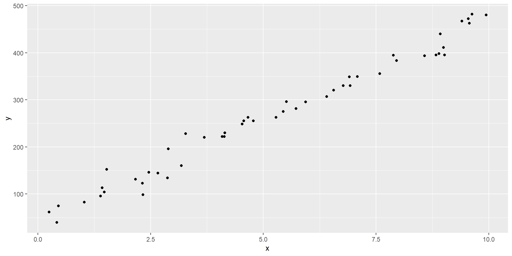
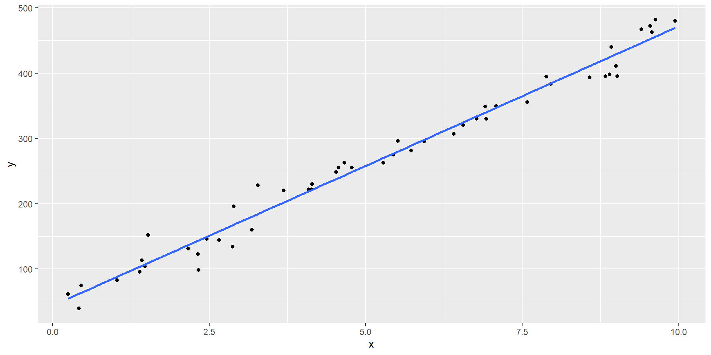
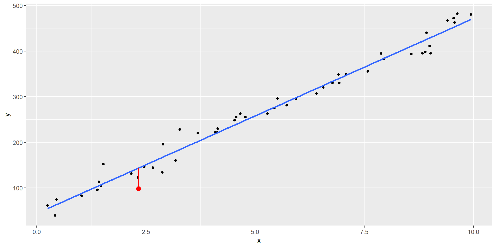
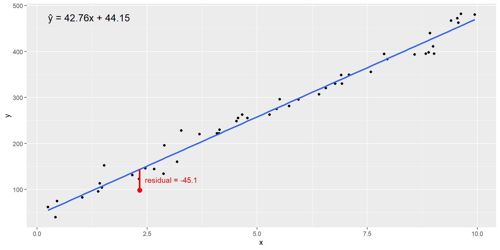

Call:
lm(formula = y ~ x, data = data)
Coefficients:
(Intercept) x
44.15 42.76 Lineær regression
Hvad er det nu det er?

Vi ved ikke hvad x og y er. Pointen er at det ser ud til at der er en lineær sammenhæng mellem x og y. Når x stiger, stiger y også. Hvordan ser den lineære sammenhæng ud?
En ret linie
Her har vi lagt en ret linie ind. Men er det den bedste? (spoiler: Det er den)

Den beskriver en sammenhæng mellem x og y.
Lineær regression
I husker måske at en ret linie kan beskrives som
\(y = ax + b\)
Opgaven er altså at finde den rette linie, beskrevet ved a og b, der bedst beskriver sammenhængen mellem x og y.
Hvordan gør vi det?
Lineær regression
Linien fortæller: Hvis x har en bestemt værdi, hvilken værdi burde y så have?

Den værdi har y ikke. Forskellen kalder vi “residualen”.
Lineær regression
Alle punkterne har en residual.
En afvigelse fra den “sande” værdi.
Vi vil derfor skrive at:
\(y = ax + b + \epsilon\)
Den “bedste” linie er den hvor summen af residualerne, \(\epsilon\), er mindst mulig.
Der er en del sjusk i notationen både her, overalt på nettet og i eksamensopgaver, hvor vi skriver \(y = ax + b\). Det er ikke korrekt, for \(\epsilon\) mangler.
\(\hat{y} = ax + b\) er mere korrekt.
Lineær regression

Læg mærke til at residualen er negativ for det med rødt markerede punkt.
Andre punkter har en positiv værdi.
Hvad sker der hvis vi lægger dem alle sammen sammen?
Vi risikerer at resultatet bliver 0 - fordi summen af positive og negative tal kan risikere at blive 0.
Lineær regression
Så vi kvadrerer residualerne og lægger dem sammen.
Den sum forsøger vi at minimere ved at vælge a og b.
Derfor kalder vi også metoden for “mindste kvadraters metode”. Eller OLS - Ordinary Least Squares.
Det kunne man gøre med papir, blyant, lineal og lommeregner. Det er der ingen der gider
Så vi bruger funktionen lm()
Det generelle eksempel
Hvis vi vil finde ud af hvordan x beskriver y, skriver vi:
lm(y ~ x, data = df)
Læs det som: y som funktion af x.
Den giver et output:
De enkelte dele
y er den afhængige variabel, x er den uafhængige.
Eller:
y er responsvariabel, og x er forklarende.
Der gemmer sig mere information!
Outputtet
Gem resultatet og kør funktionen “summary” på det gemte resultat:
Call:
lm(formula = y ~ x, data = data)
Residuals:
Min 1Q Median 3Q Max
-45.116 -11.157 -1.313 10.985 43.723
Coefficients:
Estimate Std. Error t value Pr(>|t|)
(Intercept) 44.153 5.442 8.113 1.49e-10 ***
x 42.764 0.913 46.840 < 2e-16 ***
---
Signif. codes: 0 '***' 0.001 '**' 0.01 '*' 0.05 '.' 0.1 ' ' 1
Residual standard error: 18.81 on 48 degrees of freedom
Multiple R-squared: 0.9786, Adjusted R-squared: 0.9781
F-statistic: 2194 on 1 and 48 DF, p-value: < 2.2e-16Hyppig eksamensopgave: Her er output af det I burde have svaret i opgave 1a). Hvilken regression er der tale om? Fortolk resultaterne.
Så lad os kigge på de enkelte dele, så vi ved hvad de dækker over.
Call og Residuals
Call:
lm(formula = y ~ x, data = data)
Residuals:
Min 1Q Median 3Q Max
-45.116 -11.157 -1.313 10.985 43.723
Coefficients:
Estimate Std. Error t value Pr(>|t|)
(Intercept) 44.153 5.442 8.113 1.49e-10 ***
x 42.764 0.913 46.840 < 2e-16 ***
---
Signif. codes: 0 '***' 0.001 '**' 0.01 '*' 0.05 '.' 0.1 ' ' 1
Residual standard error: 18.81 on 48 degrees of freedom
Multiple R-squared: 0.9786, Adjusted R-squared: 0.9781
F-statistic: 2194 on 1 and 48 DF, p-value: < 2.2e-16Call er den funktion vi faktisk kørte for at få dette resultat. Den er som regel redigeret væk.
Residuals er summary statistics på residualerne. Vi bruger dem til at tjekke modellen. De er som regel også redigeret væk.
Koefficienter - Estimate
Call:
lm(formula = y ~ x, data = data)
Residuals:
Min 1Q Median 3Q Max
-45.116 -11.157 -1.313 10.985 43.723
Coefficients:
Estimate Std. Error t value Pr(>|t|)
(Intercept) 44.153 5.442 8.113 1.49e-10 ***
x 42.764 0.913 46.840 < 2e-16 ***
---
Signif. codes: 0 '***' 0.001 '**' 0.01 '*' 0.05 '.' 0.1 ' ' 1
Residual standard error: 18.81 on 48 degrees of freedom
Multiple R-squared: 0.9786, Adjusted R-squared: 0.9781
F-statistic: 2194 on 1 and 48 DF, p-value: < 2.2e-16Estimaterne er koefficenterne i y = ax+b. Intercept er b, x er koefficienten der ganges på x værdien, her altså a.
Den model vi har bygget er altså:
\(\hat{y} = 44.153 + 42.764x\)
Koefficienter - Std. error
Call:
lm(formula = y ~ x, data = data)
Residuals:
Min 1Q Median 3Q Max
-45.116 -11.157 -1.313 10.985 43.723
Coefficients:
Estimate Std. Error t value Pr(>|t|)
(Intercept) 44.153 5.442 8.113 1.49e-10 ***
x 42.764 0.913 46.840 < 2e-16 ***
---
Signif. codes: 0 '***' 0.001 '**' 0.01 '*' 0.05 '.' 0.1 ' ' 1
Residual standard error: 18.81 on 48 degrees of freedom
Multiple R-squared: 0.9786, Adjusted R-squared: 0.9781
F-statistic: 2194 on 1 and 48 DF, p-value: < 2.2e-16Error er standardfejlen (i familie med SEM her dog ikke standarderror på “mean” men SE på estimatet)
\(H_0\) for hvert af estimaterne er at “Estimate = 0”. Det spørgsmål vi som regel forsøger at finde svar på er - hvor meget betyder “x” for værdien af “y”. Eller: “Hvis alder stiger med 1 år, hvor mange mmHg stiger det systoliske blodtryk”.
Hvis estimatet på den koefficient er 0 - har alder så betydning for blodtrykket? Hvis koefficienten i virkeligheden er 0 - så har alder ingen betydning for blodtrykket.
Koefficienter - t value
Call:
lm(formula = y ~ x, data = data)
Residuals:
Min 1Q Median 3Q Max
-45.116 -11.157 -1.313 10.985 43.723
Coefficients:
Estimate Std. Error t value Pr(>|t|)
(Intercept) 44.153 5.442 8.113 1.49e-10 ***
x 42.764 0.913 46.840 < 2e-16 ***
---
Signif. codes: 0 '***' 0.001 '**' 0.01 '*' 0.05 '.' 0.1 ' ' 1
Residual standard error: 18.81 on 48 degrees of freedom
Multiple R-squared: 0.9786, Adjusted R-squared: 0.9781
F-statistic: 2194 on 1 and 48 DF, p-value: < 2.2e-16t value er testværdien vi bruger til at afgøre om vi kan afvise \(H_0\). Hvad viser den?
Hvor mange “Std. Error” ligger vores estimat fra 0?
Vi finder den ved at dividere “Estimate” med “Std. Error”
I kommer til at støde på to typer model- eller regressions output. (multipel) lineær og logistisk. At der står “t value” fortæller os at det er en lineær regression.
Koefficienter - p-value
Call:
lm(formula = y ~ x, data = data)
Residuals:
Min 1Q Median 3Q Max
-45.116 -11.157 -1.313 10.985 43.723
Coefficients:
Estimate Std. Error t value Pr(>|t|)
(Intercept) 44.153 5.442 8.113 1.49e-10 ***
x 42.764 0.913 46.840 < 2e-16 ***
---
Signif. codes: 0 '***' 0.001 '**' 0.01 '*' 0.05 '.' 0.1 ' ' 1
Residual standard error: 18.81 on 48 degrees of freedom
Multiple R-squared: 0.9786, Adjusted R-squared: 0.9781
F-statistic: 2194 on 1 and 48 DF, p-value: < 2.2e-16Pr(>|t|) er p-værdien: Risikoen for at vi afviser \(H_0\), selvom den faktisk er sand. Altså at vi afviser at estimatet i virkeligheden er 0 - og accepterer den alternative hypotese, at estimatet ikke er 0 (og at x derfor faktisk påvirker y).
Typisk: Større eller mindre end 0.05.
Tæt sammenhæng mellem t-value og p-value!
Populær ting i eksamensopgaver
De der formulerer eksamensopgaver synes det er supersjovt at redigere en værdi ud af outputtet af en model og stille et spørgsmål der kræver at I har netop den værdi.
Husk: \(\text{t value} = \frac{\text{Estimate}}{\text{Std. Error}}\)
p-værdien kan vi ikke beregne direkte. Mangler den i opgaven, bruger vi testværdien:
\(\frac{\text{Estimate}}{\text{Std. Error}}\)
og ser om den er større eller mindre end 1.96 (hvis vi tester på et 5% niveau)
Vi kan faktisk godt beregne p-værdien. Den er givet ved: 2*(1-pt(abs(t value), df))
pt er pnorm() blot for t-fordelingen i stedet for normalfordelingen, og df er antallet af frihedsgrader i modellen.
Men det behøver vi ikke - test-værdien er rigeligt.
Resten
Call:
lm(formula = y ~ x, data = data)
Residuals:
Min 1Q Median 3Q Max
-45.116 -11.157 -1.313 10.985 43.723
Coefficients:
Estimate Std. Error t value Pr(>|t|)
(Intercept) 44.153 5.442 8.113 1.49e-10 ***
x 42.764 0.913 46.840 < 2e-16 ***
---
Signif. codes: 0 '***' 0.001 '**' 0.01 '*' 0.05 '.' 0.1 ' ' 1
Residual standard error: 18.81 on 48 degrees of freedom
Multiple R-squared: 0.9786, Adjusted R-squared: 0.9781
F-statistic: 2194 on 1 and 48 DF, p-value: < 2.2e-16Residual standard error er et estimat af standardafvigelsen af residualerne, \(\epsilon\). Den bliver brugt til noget. Men det behøver vi ikke bekymre os så meget om. De “48” frihedsgrader vi så lige før kan vi også aflæse her.
Multiple R-squared er den andel af variationen i y der forklares af modellen. 0.9786 er utroligt godt.
Adjusted R-squared er R-squared, hvor vi korrigerer for at vi har lagt flere paramtre ind i modellen. Det har jeg ikke set i eksamensopgaver.
Modellen giver et svar på spørgsmålet: Hvad forventer vi at y ville være hvis x var “noget”. Alternativet til den model ville være at vi svarede “gennemsnittet af alle y-værdierne” uanset hvad x var. F-statistic fortæller om vores modeler signifikant bedre end det.
Hvor sikre er vi på estimaterne?
Vi får som regel lov at antage normalitet, og derfor:
\(\text{estimate} \pm 1.96\cdot \text{Std. Error}\)
Skal vi være helt korrekte, skal vi beregne den kritiske værdi ud fra t-fordelingen, og kende antallet af frihedsgrader.
Så ville det blive:
estimate + c(-1,1)*qt(1-0.025, df = 48)
Det har jeg ikke set i nogen eksamensopgaver (endnu).
Hvordan estimerer vi Y fra X?
Call:
lm(formula = y ~ x, data = data)
Residuals:
Min 1Q Median 3Q Max
-45.116 -11.157 -1.313 10.985 43.723
Coefficients:
Estimate Std. Error t value Pr(>|t|)
(Intercept) 44.153 5.442 8.113 1.49e-10 ***
x 42.764 0.913 46.840 < 2e-16 ***
---
Signif. codes: 0 '***' 0.001 '**' 0.01 '*' 0.05 '.' 0.1 ' ' 1
Residual standard error: 18.81 on 48 degrees of freedom
Multiple R-squared: 0.9786, Adjusted R-squared: 0.9781
F-statistic: 2194 on 1 and 48 DF, p-value: < 2.2e-16Hvis x = 10, hvad forventer vi så y vil være?
En rigtig opgave
Vi får denne variabelliste:
- episodes: Antal episoder med feber under graviditeten (før interview)
- death: Fosterdød (ja = 1, nej = 0)
- mage: Moderens alder ved interview
- smoke: Rygning under graviditet (1=0 cigaretter/dag, 2=1-10 cigaretter/dag, 3 = 11+ cigaretter/dag)
- alco: Antal genstande pr uge under graviditet
- weight: Fødselsvægt i gram
Og skal undersøge en evt sammenhæng mellem fødselsvægt og rygning. Vi vil også se på indtagelse af alkohol under graviditeten.
Hvilken type analyse vil du udføre for at undersøge den sammenhæng?
Hvilken type analyse?
Der er mange at vælge imellem. Men til eksamen er der to:
- Lineær regression
- Logistisk regression
Hvis vi skal forudsige eller forklare noget der er kontinuert: Lineær
Hvis vi skal forudsige eller forklare noget der er kategorisk: Logistisk
Her skal vi forklare/undersøge/forudsige fødselsvægt. Den er kontinuær.
Hvordan skal modellen så se ud?
Vi skal se på sammenhæng mellem fødselsvægt og rygning, samt indtagelse af alkohol under graviditeten.
Så der er to forklarende variable
Hov! To forklarende variable!!
Når vi har mere end en forklarende variabel - kalder vi det for multipel lineær regression.
Jeg har bemærket at modelbesvarelser kalder det hele for multipel lineær regression. Det kræver sådan set at der er mere end en forklarende variabel. Her har vi to, så det er faktisk multipelt.
Hvad var det?
Ja, det er når der er mere end en forklarende variabel. Indtil videre har vi set på:
lm(y~x, data = data)
Nu skal vi have en der er mere kompleks:
lm(y~x+z, data = data)
Den kan vi ikke tegne eller plotte. Men ellers fungerer det fuldstændigt som før, vi får blot flere estimater, for nu er modellen jo:
\(\hat{y} = ax + bz + c\)
Eller mere generelt:
\(\hat{y} = \beta_0 + \beta_1x + \beta_2z\)
Mer hov!
Mors rygning under graviditeten
smoke: Rygning under graviditet (1=0 cigaretter/dag, 2=1-10 cigaretter/dag, 3 = 11+ cigaretter/dag)
Det er jo ikke kontinuært. Hvordan så?
lm klarer det fint. Vi skal blot huske at fortælle funktionen at smoke er en kategorisk variabel. Det gør vi ved at pakke variablen ind i funktionen factor()
Men så bliver det heller ikke mere kompliceret (i de eksamensopgaver jeg har set)
Kategoriske variable
Variable der kun kan tage èn af flere værdier.
De kan være ordnede - så de ligger i en bestemt rækkefølge. Det gør de her, 1 er mindre rygning end 2, som igen er mindre rygning end 3. Der behøver ikke være en “god-dårlig” betydning i det.
De kan også være uordnede - så er rækkefølgen ligegyldig. Det kunne være mand-kvinde.
Det væsentligste er at enten er man i en kategori. Eller også er man i en anden.
Opgaven fortsætter
Angiv relevant R-kode med brug af de variabelnavne vi har fået.
Hvilken R-kode skriver vi så?
lm(weight ~ factor(smoke) + alco, data = data)
Vi husker at forklare at det er med smoke, mors rygestatus, som forklarende/uafhængig kategorisk variabel. Og alco, mors alkoholindtag under graviditeten som forklarende/uafhængig kontinuært variabel, og fødselsvægt som den afhængige kontinuærte variabel.
I den virkelige verden ville vi sørge for at de variable i data der er kategoriske, optræder som kategoriske variable i data. Her skriver vi factor(smoke) fordi vi ikke ved om smoke optræder som kategorisk variabel i datasættet. Og for at vise at vi har forstået at den skal være kategorisk i modellen.
Næste delspørgsmål
Vi får oplyst at dette er resultatet af den korrekte analyse.
| Estimate | Std. Error | t value | Pr(>|t|) | |
|---|---|---|---|---|
| (Intercept) | 3613.623 | 7.108 | 508.372 | <2e-16*** |
| factor(smoke)2 | -127.377 | 15.757 | ||
| factor(smoke)3 | -194.897 | 17.519 | -11.125 | <2e-16*** |
| alco | 1.045 | 6.075 | 0.172 | 0.863 |
Hvad mangler - og hvad skulle der stå?
Er det signifikant?
Testværdiens absolutte værdi er >1.96 og Estimate for factor(smoke)2 er derfor signifikant på et \(\alpha = 0.05\) niveau.
Hvordan tolker vi ellers tallene?
| Estimate | Std. Error | t value | Pr(>|t|) | |
|---|---|---|---|---|
| (Intercept) | 3613.623 | 7.108 | 508.372 | <2e-16*** |
| factor(smoke)2 | -127.377 | 15.757 | ||
| factor(smoke)3 | -194.897 | 17.519 | -11.125 | <2e-16*** |
| alco | 1.045 | 6.075 | 0.172 | 0.863 |
Intercept er vores “referencegruppe”. Den forventede fødselsvægt når smoke = 1 (ingen rygning), og alco = 0.
Altså for børn af ikke-rygende mødre, der drikker 0 genstande alkohol pr uge.
smoke = 1 er referenceværdien for smoke. Fordi den står først. Vi kan tvinge modellen til at vælge en anden referencegruppe, 2 fx.
Hvis mor var i smoke = 2 kategorien, så estimerer vores model at den forventede fødselsvægt er 127 gram lavere, alt andet lige.
Hvis mor var i smoke = 3 kategorien, så estimerer modellen at den forventede fødselsvægt er 195 gram lavere, alt andet lige.
Bemærk at Estimate på factor(smoke)2 og factor(smoke)3 ikke skal lægges sammen.
For hver enhed alco stiger, stiger den forventede fødselsvægt, alt andet lige, med ca 1 gram.
Sammenfattende
Estimatet for fødselsvægt er signifikant lavere for børn af rygende mødre. Effekten er større når der ryges mere. Der findes ikke evidens for en sammenhæng mellem alkoholforbrug og fødselsvægt.
Ryges der 1-10 cigaretter pr dag under graviditeten estimeres det at fødselsvægten er 127 gram lavere med et 95% KI på
Ryges der mere end 10 cigaretter om dagen estimeres fødselsvægten til at være 195 gram lavere med et 95% KI på:
Estimatet på alkoholindtagets påvirkning af fødselsvægten indikerer at den, alt andet lige, stiger med 1 gram pr. genstand mor har drukket om ugen. Estimatet er dog ikke statistisk signifikant, og vi kan ikke afvise null-hypotesen.
Prædiktion
Hvad forventer vi fødselsvægten vil være, hvis mor har røget 20 cigaretter om dagen og drukket 16 genstande alkohol om ugen under graviditeten?
| Estimate | Std. Error | t value | Pr(>|t|) | |
|---|---|---|---|---|
| (Intercept) | 3613.623 | 7.108 | 508.372 | <2e-16*** |
| factor(smoke)2 | -127.377 | 15.757 | ||
| factor(smoke)3 | -194.897 | 17.519 | -11.125 | <2e-16*** |
| alco | 1.045 | 6.075 | 0.172 | 0.863 |
Fedme og blodtryk
Vi skal se på sammenhængen mellem blodtryk og fedme. Vi får oplyst at der er et datasæt med 102 individer, 44 mænd, 58 kvinder.
Der er variabler: KØN (1=kvinde, 0= mand)
FEDME: Fedmegrad - vægt i forhold til idealvægt. 1.2 betyder at man vejer 20% mere end man burde. Svarende til 120% af idealvægten
BLODTRYK: Systolisk blodtryk (i mmHg)
De første 6 observationer, og nogle deskriptive størrelser:
# A tibble: 6 × 3
KØN FEDME BLODTRYK
<dbl> <dbl> <dbl>
1 0 1.31 130
2 0 1.31 148
3 0 1.19 146
4 0 1.11 122
5 0 1.34 140
6 0 1.17 146mean(BLODTRYK[KØN==0]) 127.9545 mean(BLODTRYK[KØN==1]) 126.3103 sd(BLODTRYK[KØN==0]) 16.59077 sd(BLODTRYK[KØN==1]) 19.41893
- Beregn for kvinderne et referenceinterval for blodtrykket. Hvad udtrykker det?
Fedme og blodtryk
Der er ikke angivet hvilket referenceinterval der ønskes. Så vi går med et der indeholder 95% af observationerne. Vi antager at målingerne er normalfordelte.
mean(BLODTRYK[KØN==1]) 126.3103 sd(BLODTRYK[KØN==1]) 19.41893
Fedme og blodtryk
- undersøg om blodtrykket er ens for de to køn ved en t-test.
En eller to samples? Parret? Hvad er vores \(H_0\)?
Der er to uparrede samples.
\(H_0: \mu_0 - \mu_1 = 0\)
Hvordan beregner vi så SE for hver gruppe?
\(\text{SE} = \frac{s}{\sqrt{n}}\)
Og SE for differensen?
\(SE_{diff} = \sqrt{SE_0^2 + SE_1^2}\)
Fedme og blodtryk
Så er vi klar til at regne
mean(BLODTRYK[KØN==0]) 127.9545 mean(BLODTRYK[KØN==1]) 126.3103 sd(BLODTRYK[KØN==0]) 16.59077 sd(BLODTRYK[KØN==1]) 19.41893
Antal kvinder (1): 58
Antal mænd (0): 44
Hvad er test-værdien?
Fedme og blodtryk
- der bliver lavet en analyse, der giver dette output:
Call: lm(formula = BLODTRYK ~ FEDME) |
||||
|---|---|---|---|---|
| Estimate | Std. Error | t value | Pr(>|t|) | |
| (Intercept) | 96.818 | 8.920 | 10.86 | <2e-16*** |
| FEDME | 23.001 | 6.667 | 3.45 | 0.000822*** |
Hvilken analyse er der udført? Hvad kan vi konkludere, og hvordan fortolker vi estimaterne
(multipel) Lineær regression
med BLODTRYK som responsvariabel
og FEDME som den uafhængige variabel.
Vi estimerer at hvis FEDME graden stiger med 1
vil blodtrykket stige med ca. 23
Dette estimat er statistisk signifikant på 95% niveau.
Interceptet svarer til blodtrykket ved en fedmegrad på 0, og kan derfor ikke fortolkes.
Fedme og blodtryk
Så laver vi en anden analyse, hvor vi inddrager KØN.
Call: lm(formula = BLODTRYK ~ factor(KØN) + FEDME) |
||||
|---|---|---|---|---|
| Estimate | Std. Error | t value | Pr(>|t|) | |
| (Intercept) | 93.287 | 8.937 | 10.438 | <2e-16*** |
| factor(KØN)1 | -7.730 | 3.715 | ||
| FEDME | 7.172 | 4.049 | ||
Beregn det manglende estimat for FEDME og t value for KØN.
Fedme og blodtryk
Fortolk estimater og konkluder.
Call: lm(formula = BLODTRYK ~ factor(KØN) + FEDME) |
||||
|---|---|---|---|---|
| Estimate | Std. Error | t value | Pr(>|t|) | |
| (Intercept) | 93.287 | 8.937 | 10.438 | <2e-16*** |
| factor(KØN)1 | -7.730 | 3.715 | ||
| FEDME | 7.172 | 4.049 | ||
t value for KØN var (i absolutte tal) større end 1.96
og er derfor statistisk signifikant på et 5% niveau.
En stigning på 1 i fedmegrad, estimerer vi derfor til at give en
stigning på 29 i blodtrykket, kontrolleret for KØN.
Justeret for FEDME, ser vi at kvinderne i gennemsnit har
et lavere blodtryk end mændene. Vi estimerer forskellen til at være 7.73
Denne forskel er signifikant på et 5% niveau.
Fedme og blodtryk - sidste omgang
Sammenlign resultaterne i b) og d) (b var testen af forskellig middelværdi for de to køn, d var den lineære model med KØN inkluderet) og kommenter på en eventuel forskel i betydningen af køn for blodtrykket
De to analyser gav forskellige konklusioner vedr. effekten af KØN for blodtrykket.
Hvad er forskellen?
Den første test justerer ikke for fedme og konkluderer at der ikke er forskel på blodtrykket for mænd og kvinder.
Den anden model justerer for fedme og ser en forskel på kønnene.
Hvad kan det skyldes?
Potentielt at kvinder har en højere fedmegrad end mænd, hvilket maskerer effekten af køn i den ujusterede analyse.
Hoppemålinger genbesøgt
Recap: 249 børn, drenge (1) og piger (2) har fået målt hvor langt de kan hoppe på højre og venstre. Forskellen er målt som “diff” (højre - venstre). Nu udføres følgende analyse: summary(lm(diff~factor(gender))) og vi får dette resultat:
| Estimate | Std. Error | t value | Pr(>|t|) | |
|---|---|---|---|---|
| (Intercept) | -3.775 | 3.471 | -1.087 | 0.27795 |
| factor(gender)2 | 16.283 | 4.714 | 3.454 | 0.00065*** |
Hvilken analyse har vi gennemført? Hvad kan vi konkludere?
Fortolk de to værdier i søjlen “Estimate”
Hvilken analyse?
Multipel lineær regression med diff som afhængig variabel, og køn som kategorisk forklarende variabel.
Hvad er referenceværdien for køn?
Det er drengene.
Er kønsforskellen signifikant?
Ja, p-værdien er 0.00065, der er en signifikant kønsforskel (i forskellen på hvor langt børnene kan hoppe på højre og venstre ben)
Hvor stor er den?
Vi estimerer at pigerne i middel kan hoppe 16.283 - 3.775 = 12.508 cm længere på højre end på venstre ben.
Denne forskel var statistisk signifikant
Hvordan med drengene?
Vi estimerer forskellen på hoppelængde (på højre - venstre pen) for drengene er -3.775
Denne forskel er ikke signifikant.
::::
The final hoppe opgave
Beregn de tilhørende 95% konfidensintervaller på estimaterne
| Estimate | Std. Error | t value | Pr(>|t|) | |
|---|---|---|---|---|
| (Intercept) | -3.775 | 3.471 | -1.087 | 0.27795 |
| factor(gender)2 | 16.283 | 4.714 | 3.454 | 0.00065*** |